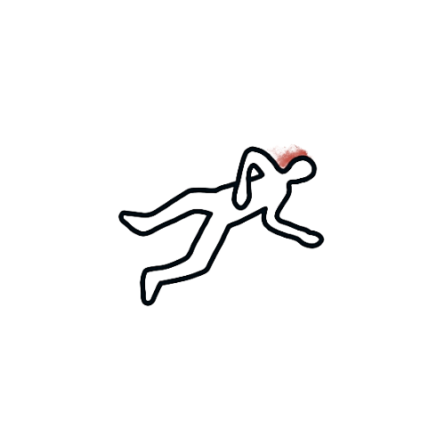

Scène de crime - Salon
Fouille la scène, récupère les preuves, puis ouvre la tablette avec T.

Salon principal
Les indices sont cachés dans le décor.
Fouille la scène, récupère les preuves, puis ouvre la tablette avec T.

Sélectionne une preuve collectée.
Collecte une preuve pour commencer.